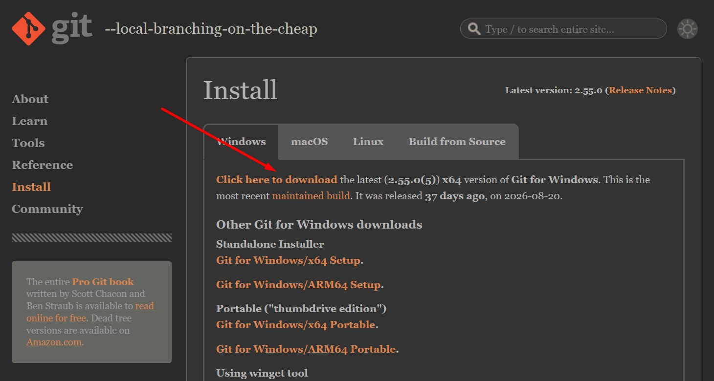

Git e GitHub · Tempo estimado: 10 minutos
O Git é um programa que guarda o histórico do seu projeto: cada vez que você salva uma versão, ele registra. Assim, se algo der errado, dá para voltar a uma versão anterior. Vamos instalá-lo no seu computador. Ele é gratuito.
Abra o navegador e pesquise git download no Google (o site certo é o git-scm.com). Se preferir, entre direto neste link: git-scm.com/downloads.
Com a aba Windows selecionada, clique em Click here to download (onde está a seta vermelha). O download começa sozinho.

Git-2.55.0-64-bit.exe. O número da versão pode estar diferente (o Git é atualizado com frequência). Isso não é problema. O importante é que seja um executável, ou seja, termine em .exe.Abra a pasta Downloads e dê dois cliques no arquivo .exe. Se o Windows perguntar se você quer permitir alterações no computador, clique em Sim.
Vão aparecer várias telas com opções técnicas. Você não precisa entender todas: basta ir clicando em Next, Next, Next... até aparecer o botão Install. Clique nele, espere terminar e clique em Finish.
O CMD (Prompt de Comando) é uma janela preta onde o computador recebe comandos digitados por nós. Para abrir:
cmd. Não é preciso clicar em nenhum campo, basta começar a digitar;cmd e aperte Enter.Na janela preta, digite o comando abaixo e aperte Enter:
git --version
Se aparecer algo como git version 2.55.0.windows.1, o Git foi instalado com sucesso! Os números podem ser diferentes.
O Git precisa saber quem está registrando as versões. Faça isso uma única vez, no CMD, trocando pelos seus dados (mantenha as aspas). Use o mesmo e-mail da sua conta do GitHub:
git config --global user.name "Seu Nome"
git config --global user.email "seu-email@exemplo.com"
Aperte Enter depois de cada linha. Se não aparecer nenhuma mensagem, é porque deu certo.
.exe do site git-scm.comgit --version e apareceu a versão